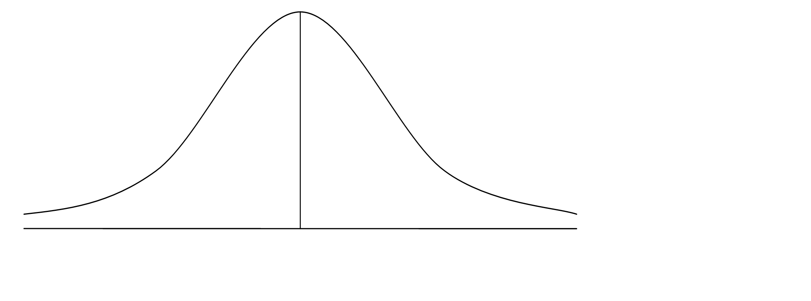
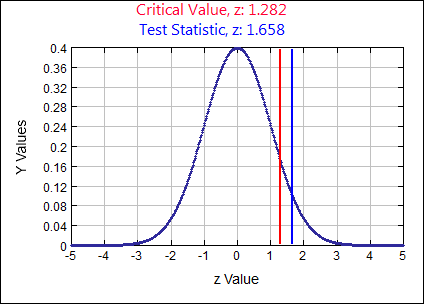
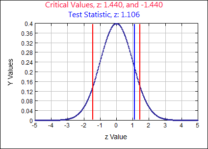
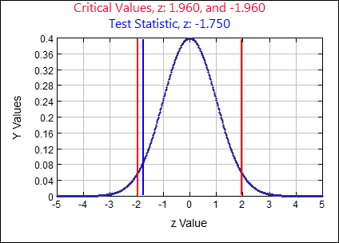
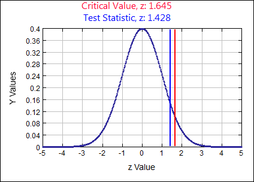
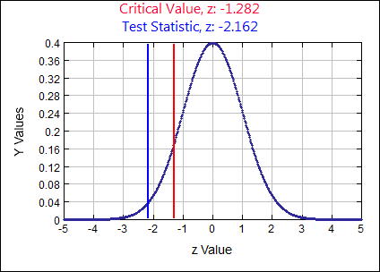
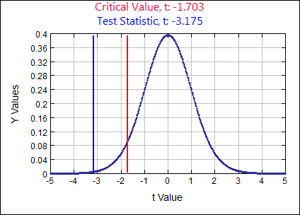
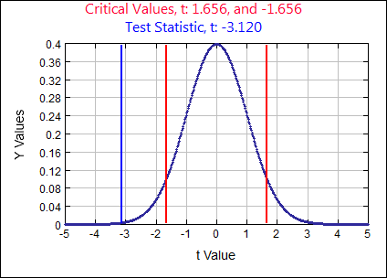
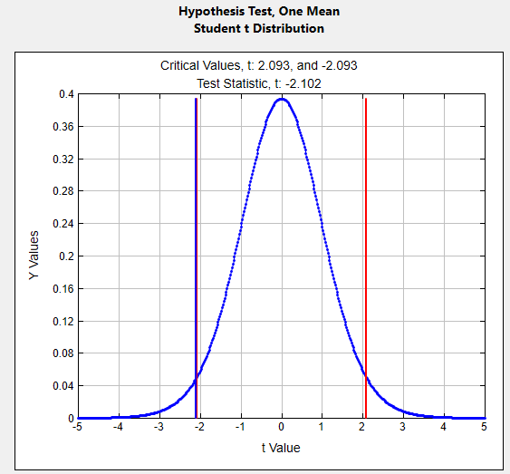
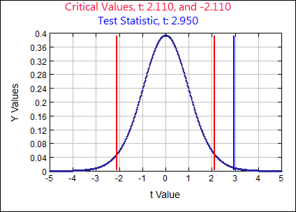

Unit 4 Hypothesis Testing
Review
Hypothesis Testing Design
Translate the claim into a mathematical statement. Use the claim to identify the null and alternate hypotheses for the hypothesis test. Label the assumed population parameter and shade the area of statistical significance. Identify the type of test (right tail, left tail or two tail).
- The mean IQ of statistic students is greater than 115.
Claim:
\( \mu>115\) \(H_{0}:\)
\( \mu \leq 115 \) assume \( H_{0}:\) \( \mu = 115 \) \( H_{A}:\)
\( \mu>115\) Type of Test:
Right Tailed  - The mean wait time at Auto Fix is less than or equal to 2.5 hours.
Claim:
\( \mu \leq 2.5\) \(H_{0}:\)
\( \mu \leq 2.5 \) assume \( H_{0}:\) \( \mu = 2.5 \) \( H_{A}:\)
\( \mu>2.5\) Type of Test:
Right Tailed - The proportion of students who enjoy working stats problems is at least 80%.
Claim:
\( p \geq 0.8\) \(H_{0}:\)
\( p \geq 0.8 \) assume \( H_{0}:\) \( p = 0.8 \) \( H_{A}:\)
\( p \lt 0.8\) Type of Test:
Left Tailed - The mean walking time from the parking lot is less than 1.5 minutes.
Claim:
\( \mu \lt 1.5\) \(H_{0}:\)
\( \mu \geq 1.5 \) assume \( H_{0}:\) \( \mu = 1.5 \) \( H_{A}:\)
\( \mu \lt 1.5\) Type of Test:
Left Tailed - The mean grade on the Final Exam is 72.
Claim:
\( \mu = 72\) \(H_{0}:\)
\( \mu = 72 \) assume \( H_{0}:\) \( \mu = 72 \) \( H_{A}:\)
\(\mu \neq 72 \) Type of Test:
Two Tailed - The proportion of students who wish we didn’t have HW is less than 12%.
Claim:
\( p \lt 0.12\) \(H_{0}:\)
\( p \geq 0.12 \) assume \( H_{0}:\) \( p = 0.12 \) \( H_{A}:\)
\( p \lt 0.12\) Type of Test:
Left Tailed - Determine whether the hypothesis test for each claim is right-tailed, left-tailed or two-tailed test. Try to do this without developing your null and alternate hypotheses. Check by developing the null and alternate.
- A manufacturer of grandfather clocks claims that the mean time its clocks lose is no more than 0.02 seconds per day.
Claim:
\( \mu \leq 0.02\) Right Tailed - A financial analyst claims the return rate of a 15 year US Bond has a mean different than 12.1%
Claim:
\( \mu \neq 0.121\) Two Tailed - A research institute claims the mean length of most dreams is greater than 10 minutes.
Claim:
\( \mu \gt 10\) Right Tailed - At least 45% of renters own renters insurance.
Claim:
\( p \geq 0.45\) Left Tailed - The mean life of a certain tire is 50,000 miles.
Claim:
\( \mu = 50000\) Two Tailed
- A manufacturer of grandfather clocks claims that the mean time its clocks lose is no more than 0.02 seconds per day.
- The mean number of songs purchased annually on an iTunes account is 36 songs.
Claim:
\( \mu = 36 \) \( H_{0}: \) \( \mu = 36 \) - Reject \( H_{0} \):
There is
sufficient evidence to reject the claim the mean number of songs purchased annually on an iTunes account is 36 songs. - Fail to Reject \( H_{0} \):
There is
not sufficient evidence to reject the claim the mean number of songs purchased annually on an iTunes account is 36 songs.
- Reject \( H_{0} \):
- The US Department of Labor claims the proportion of hourly workers earning over $20 per hour is greater than 42%
Claim:
\( p \gt 0.42 \) \( H_{0}: \) \( p \leq 0.42 \) - There is
sufficient evidence to support the claim the proportion of hourly workers earning over $20 per hour is greater than 42%. - Fail to Reject \( H_{0} \):
There is
not sufficient evidence to support the claim the proportion of hourly workers earning over $20 per hour is greater than 42%.
- There is
- An automotive manufacturer claims the mean gas mileage of its model is greater than or equal to 40 miles per gallon.
Claim:
\( \sigma \geq 40 \) \( H_{0}: \) \( \sigma \lt 40 \) - Reject \( H_{0} \):
There is
sufficient evidence to support the claim the mean gas mileage of its model is greater than or equal to 40 miles per gallon. - Fail to Reject \( H_{0} \):
There is
not sufficient evidence to support the claim the mean gas mileage of its model is greater than or equal to 40 miles per gallon.
- Reject \( H_{0} \):
- A government report claims the proportion of lung cancer cases that are due to smoking is more than 90%.
Claim:
\( p \gt 0.9 \) \( H_{0}: \) \( p \leq 0.9 \) - Reject \( H_{0} \):
There is
sufficient evidence to support the claim the proportion of lung cancer cases that are due to smoking is more than 90%. - Fail to Reject \( H_{0} \):
There is
not sufficient evidence to support the claim the proportion of lung cancer cases that are due to smoking is more than 90%.
- Reject \( H_{0} \):
- At least 14% of all homeowners have a security alarm.
Claim:
\( p \geq 0.14 \) \( H_{0}: \) \( p \geq 0.14 \) - Reject \( H_{0} \):
There is
sufficient evidence to reject the claim at least 14% of all homeowners have a security alarm. - Fail to Reject \( H_{0} \):
There is
not sufficient evidence to reject the claim at least 14% of all homeowners have a security alarm.
- Reject \( H_{0} \):
- In each of the exercises below, you are given a null hypothesis and three confidence intervals that represent three samples. Decide whether each confidence interval indicates that you should reject H0.
- \( H_{0}:\) \( \mu = 70 \)
\(\mu=68 \pm 1\)
(67,69) Reject \( H_{0} \) 70 is NOT in the interval \(\mu=69 \pm 2\)
(67,70) Fail to Reject \( H_{0} \) 70 is in the interval \(\mu=71 \pm 1.5\)
(69.5,72.5) Fail to Reject \( H_{0} \) 70 is in the interval - \( H_{0}:\) \( \mu = 54 \)
\(\mu=53 \pm 1.5\)
(51.5,54.5) Fail to Reject \( H_{0} \) 54 is in the interval \(\mu=55 \pm 0.05\)
(54.95,55.05) Reject \( H_{0} \) 54 is NOT in the interval \(\mu=55 \pm 1.5\)
(53.5,56.5) Fail to Reject \( H_{0} \) 54 is in the interval
- \( H_{0}:\) \( \mu = 70 \)
- A sample of 800 items produced on a new machine showed that 32 of them were defective. The factory will get rid of the machine if the data indicates that the proportion of defective items is significantly more than 3%. At a significance level of 10%, test the claim the defective rate is 3% or less.
The original claim:
\(p \leq 0.03\) \( H_{0}: \)
\(p \leq 0.03\) assume \( H_{0}:\) \( p = 0.03 \) \( H_{A}: \)
\( p \gt 0.03 \) \( \alpha = \)
0.10 Test Statistic
\(z \quad=\quad \frac{\hat{p}-p}{\sqrt{\frac{p q}{n}}} \quad=\quad \frac{.04-.03}{\sqrt{\frac{(.03)(.97)}{800}}}=1.6581\)
p-value:
0.0487 Rejection Criteria: Reject \( H_{0}: \)
if p-value \( \lt 0.10 \) Decision:
0.0487 \( \lt 0.10 \) so REJECT \( H_{0} \) Concluding Statement:
There is SUFFICIENT evidence to REJECT the claim the proportion of defective items produced on the new machine is no more than 0.03 or 3%. - According to a previous census, 8% of couples living together are not married. A researcher took a random sample of 400 couples and found that 9.5% of them are not married. Test at the 15% significance level the claim the current percentage of couples living together that are not married is different from 8%.
The original claim:
\(p \neq 0.08\) \( H_{0}: \)
\(p = 0.08\) assume \( H_{0}:\) \( p = 0.08 \) \( H_{A}: \)
\( p \neq 0.08 \) \( \alpha = \)
0.15 Test Statistic
\(z \quad=\quad \frac{\hat{p}-p}{\sqrt{\frac{p q}{n}}} \quad=\quad \frac{.095-.08}{\sqrt{\frac{(.08)(.92)}{400}}}=1.1058\)
p-value:
0.2688 Rejection Criteria: Reject \( H_{0}: \)
if p-value \( \lt 0.15 \) Decision:
0.2688 \( \gt 0.15 \) Fail to Reject \( H_{0} \) Concluding Statement:
There is not sufficient evidence to support the claim the proportion of couples living together that are not married is different than 8%. - The CEO of a large electric utility claims that 80 percent of his 1,000,000 customers are very satisfied with the service they receive. To test this claim, the local newspaper surveyed 100 customers, using simple random sampling. Among the sampled customers, 73 percent say they are very satisfied. Based on these findings, can we reject the CEO's hypothesis that 80% of the customers are very satisfied? Use a 0.05 level of significance.
The original claim:
\(p = 0.8\) \( H_{0}: \)
\(p = 0.8\) assume \( H_{0}:\) \( p = 0.8 \) \( H_{A}: \)
\( p \neq 0.08 \) \( \alpha = \)
0.05 Test Statistic
\(z \quad=\quad \frac{\hat{p}-p}{\sqrt{\frac{p q}{n}}} \quad=\quad \frac{.73-.8}{\sqrt{\frac{(.8)(.2)}{100}}}=-1.75\)
p-value:
0.0801 Rejection Criteria: Reject \( H_{0}: \)
if p-value \( \lt 0.05 \) Decision:
0.0801 \( \gt 0.05 \) Fail to Reject \( H_{0} \) Concluding Statement:
There is not sufficient evidence to reject the claim 80% of the utility company’s customers are very satisfied. - In a survey of 1275 adults, 52% said it is not morally wrong to change the genetic makeup of human cells. Test the claim the majority of adults do not think it is morally wrong to change the genetic makeup of human cells. Use a significance level of 0.05.
Majority means MORE THAN 50%
The original claim:
\(p \gt .5\) \( H_{0}: \)
\(p \leq .5\) assume \( H_{0}:\) \( p = 0.5 \) \( H_{A}: \)
\( p \gt .5 \) \( \alpha = \)
0.05 Test Statistic
\(z \quad=\quad \frac{\hat{p}-p}{\sqrt{\frac{p q}{n}}} \quad=\quad \frac{.52-.5}{\sqrt{\frac{(.5)(.5)}{1275}}}=1.4283\)
p-value:
0.0766 Rejection Criteria: Reject \( H_{0}: \)
if p-value \( \lt 0.05 \) Decision:
0.0766 \( \gt 0.05 \) Fail to Reject \( H_{0} \) Concluding Statement:
There is not sufficient evidence to support the claim the majority of adults do not think it is morally wrong to change the genetic makeup of human cells (p >.5). - According to a previous US Census, 80.4% of all US residents 25 years old or older have at least a high school diploma. In a recent study, a random sample of 3000 residents 25 years old or older found that 2365 had at least a high school diploma. Is there evidence to suggest that the number of high school graduates is lower than reported in the Census? Test at the .10 significance level.
The sample proportion: \( \hat{p}=\frac{2365}{3000}=0.7883\)
The original claim:
\(p \lt .804\) \( H_{0}: \)
\(p \geq .804\) assume \( H_{0}:\) \( p = 0.804 \) \( H_{A}: \)
\( p \lt .804 \) \( \alpha = \)
0.10 Test Statistic
\(z \quad=\quad \frac{\hat{p}-p}{\sqrt{\frac{p q}{n}}} \quad=\quad \frac{.7883-.804}{\sqrt{\frac{(.804)(.196)}{3000}}}=-2.1662 (-2.1616 SD)\)
p-value:
0.0153 Rejection Criteria: Reject \( H_{0}: \)
if p-value \( \lt 0.10 \) Decision:
0.0153 \( \lt 0.10 \) Reject \( H_{0} \) Concluding Statement:
There is sufficient evidence to support the claim the number of high school graduates is lower than the 80.4 % reported in the previous census. - The EPA reports the exhaust emissions for a certain car model has a normal distribution with mean of 1.45 grams of nitrous oxide per mile. The car manufacturer claims their new process reduces the mean level of exhaust emitted for this car model. A random sample of 28 cars is taken and the mean level of exhaust emitted for this sample is 1.21 grams with a standard deviation of 0.4. Use a 0.05 significance level to test the car manufacturer’s claim.
The original claim:
\(\mu \lt 1.45 \) grams \( H_{0}: \)
\( \mu \geq 1.45\) assume \( H_{0}:\) \( \mu = 1.45 \) \( H_{A}: \)
\( \mu \lt 1.45 \) \( \alpha = \)
0.05 Test Statistic
\(t \quad=\quad \frac{\overline{x}-\mu}{(s / \sqrt{n})} \quad=\quad \frac{1.21-1.45}{(0.4 / \sqrt{28})}=-3.1749\)
p-value:
0.0019 Rejection Criteria: Reject \( H_{0}: \)
if p-value \( \lt 0.05 \) Decision:
0.0019 \( \lt 0.05 \) Reject \( H_{0} \) Concluding Statement:
There is SUFFICIENT evidence to SUPPORT the claim the new process reduces the mean level of exhaust emitted for this car model. - Studies conducted in the 1970s indicated that the average age at which children take their first alcoholic drink is 14.6 years old. Sociologists periodically check to see if the mean age is changing from 14.6. A simple random sample of 144 young adults (18 years of age) is selected and the age at which each adult took their first alcoholic drink is recorded. The sample mean age was 13.3 years of age and the standard deviation was 5 years. Use a 0.10 significance level to test the claim the mean age at which children take their first drink is 14.6 years of age.
The original claim:
\(\mu = 14.6 \) years \( H_{0}: \)
\( \mu = 14.6\) assume \( H_{0}:\) \( \mu = 14.6 \) \( H_{A}: \)
\( \mu \neq 14.6 \) \( \alpha = \)
0.10 Test Statistic
\(t \quad=\quad \frac{\overline{x}-\mu}{(s / \sqrt{n})} \quad=\quad \frac{13.3-14.6}{(5 / \sqrt{144})}=-3.12\)
p-value:
0.0022 Rejection Criteria:
Reject \( H_{0}: \) if p-value \( \lt 0.10 \) Decision:
0.0022 \( \lt 0.10 \) Reject \( H_{0} \) Concluding Statement:
There is SUFFICIENT evidence to REJECT the claim the mean age at which children take their first drink is 14.6 years of age. - The amount of water consumed per week by Tennessee residents is normally distributed. A random sample of 20 residents has a mean of 120.3 gallons and a standard deviation of 10 gallons. Test the claim the average weekly water consumption per capita in Tennessee is not 125 gallons. Use a 0.05 significance level.
The original claim:
\(\mu \neq 125 \) gallons \( H_{0}: \)
\( \mu = 125\) assume \( H_{0}:\) \( \mu = 125 \) \( H_{A}: \)
\( \mu \neq 125 \) \( \alpha = \)
0.05 Test Statistic
\(t \quad=\quad \frac{\overline{x}-\mu}{(s / \sqrt{n})} \quad=\quad \frac{120.3-125}{(10 / \sqrt{20})}=-2.1019\)
p-value:
0.0491 Rejection Criteria:
Reject \( H_{0}: \) if p-value \( \lt 0.05 \) Decision:
0.0491 \( \lt 0.05 \) Reject \( H_{0} \) Concluding Statement:
There is sufficient evidence to support the claim the mean weekly water consumption per capita in Tennessee is not 125 gallons. - A psychologist claims the mean age at which children start walking is 12.5 months. The following data give the age at which 18 randomly selected children start walking.
15 11 13 14 15 12 15 10 16
17 14 16 13 15 15 14 11 13
Test the psychologist’s claim at the 0.05 significance level.
Use technology to calculate sample statistics
mean: 13.833 standard deviation: 1.9174
The original claim:
\(\mu = 12.5 \) gallons \( H_{0}: \)
\( \mu = 12.5\) assume \( H_{0}:\) \( \mu = 12.5 \) \( H_{A}: \)
\( \mu \neq 12.5 \) \( \alpha = \)
0.05 Test Statistic
\(t \quad=\quad \frac{\overline{x}-\mu}{(s / \sqrt{n})} \quad=\quad \frac{13.8333-12.5}{(1.9174 / \sqrt{18})}=2.9502\)
p-value:
0.0090 Rejection Criteria: Reject \( H_{0}: \)
if p-value \( \lt 0.05 \) Decision:
0.0090 \( \lt 0.05 \) Reject \( H_{0} \) Concluding Statement:
There is sufficient evidence to reject the claim the mean age at which children start walking is 12.5 months. - Commuters And Parking Spaces: Listed below are the numbers of commuters and the numbers of commuters and the numbers of parking spaces at different Metro-North railroad stations. Construct a scatterplot, and run a Regression and Correlation Test using α = 0.05. Determine whether there is sufficient evidence to support a claim of a linear correlation between the numbers of commuters and the number of parking spaces.
Commuters 3453 1350 1126 3120 2641 277 579 2532 Parking Spaces 1653 676 294 950 1216 179 466 1454 The original claim:
\( p \neq 0 \) There exists a linear correlation between commuters and parking spaces. \( H_{0}: \)
\( p = 0 \) There is no linear correlation in the population \( H_{A}: \)
\( p \neq 0 \) There is some linear correlation in the population \( \alpha = \)
0.05 Rejection Criteria using r:
Reject if r is in shaded region. Correlation Coefficient:
r = 0.9012 Correlation Critical Values:
\(r_{c v}=\pm 0.707 \text { (Table } 11 )\) Decision:
Reject \( H_{0} \) ![A number line that is numbered r=-1, -0.707, r=0, +0.707 and r = 1. Above r=-1 is a scatter plot that shows a strong negative correlation because the line of best fit goes through the points with a negative slope. Next to that graph is a scatter plot that shows a weak negative correlation because the line with a negative slope does not go through most of the points, but the points do go down from left to right. Next to that and above r = 0 is a scatter plot with no correlation. The points are just scattered across the coordinate plane. Next to that is a scatter plot that shows a weak positive correlation because the line with a positive slope does not go through most of the points even though they are going up from left to right. The last graph that is above r = 1 shows a strong positive correlation because the line with a positive slope goes through most of the points.](images/u4reviewp23k.png)
Rejection Criteria using p-value: Reject \( H_{0}\) if
p-value \( \lt 0.05 \) p-value:
0.00224 Decision:
\(0.00224 \lt 0.05\) Reject \( H_{0}\) Concluding Statement:
There is sufficient evidence to support the claim a linear correlation exists between the number of commuters and the number of parking spaces a Metro-North railroad stations. Regression Equation:
\(\hat{y}=89.48817+0.409344 x\) Good predictor? Yes, Rejected \( H_{0}\) The Metro-North Station of Greenwich, CT has 2804 commuters. Find the best predicted number of parking spots at that station.
Because the regression equation is a good predictor, use the equation.
\(\hat{y}=89.48817+0.409344(2804)=1237.29=1237 \) parking spaces - Heights of Presidential Candidates: Theories have been developed about the heights of winning candidates for the US presidency and the heights of candidates who were runners-up. Listed below are heights (in inches) from recent presidential elections. Construct a scatterplot, and run a Regression and Correlation Test using α = 0.05. Is there a linear correlation between the heights of candidates who won and the heights of the candidates who were runners-up?
Winner 69.5 73 73 74 74.5 74.5 71 71 Runner-up 72 69.5 70 68 74 74 73 76 The original claim:
\( p \neq 0 \) There exists a linear correlation between heights of winners and runners-up. \( H_{0}: \)
\( p = 0 \) There is no linear correlation in the population \( H_{A}: \)
\( p \neq 0 \) There is some linear correlation in the population \( \alpha = \)
0.05 Rejection Criteria using r:
Reject if r is in shaded region. Correlation Coefficient:
r = -0.2209 Correlation Critical Values:
\(r_{c v}=\pm 0.707 \text { (Table } 11 )\) Decision:
Fail to Reject \( H_{0} \) ![A number line that is numbered r=-1, -0.707, r=0, +0.707 and r = 1. Above r=-1 is a scatter plot that shows a strong negative correlation because the line of best fit goes through the points with a negative slope. Next to that graph is a scatter plot that shows a weak negative correlation because the line with a negative slope does not go through most of the points, but the points do go down from left to right. Next to that and above r = 0 is a scatter plot with no correlation. The points are just scattered across the coordinate plane. Next to that is a scatter plot that shows a weak positive correlation because the line with a positive slope does not go through most of the points even though they are going up from left to right. The last graph that is above r = 1 shows a strong positive correlation because the line with a positive slope goes through most of the points.](images/u4reviewp24k.png)
Rejection Criteria using p-value: Reject \( H_{0}\) if
p-value \( \lt 0.05 \) p-value:
0.5990 Decision:
\(0.5990 \gt 0.05\) Fail to Reject \( H_{0}\) Concluding Statement:
There is not sufficient evidence to support the claim a linear correlation exists between the heights of candidates who won and the heights of the candidates who were runners-up. Regression Equation:
\(\hat{y}=95.37613 - 0.32129 x\) Good predictor? No, Fail to Reject \( H_{0}\) Find the best predicted height of runner-up Goldwater, given that the height of the winning presidential candidate Johnson is 75 inches. Is the predicted height of Goldwater close to his actual height of 72 inches?
Because the regression equation is NOT a good predictor, average the y values in the data.
\(x=75 \text { inches } \overline{y}=72.06 \text { inches }\)
- Baseball: Listed below are baseball team statistics consisting of the proportions of wins and the result of this difference: Difference = (# of runs scored) – (# of runs allowed). The statistics are from a recent year, and the teams are NY, Toronto, Boston, Cleveland, Texas, Houston, San Francisco, and Kansas City. Construct a scatterplot, and run a Regression and Correlation Test using α = 0.05. Determine whether there is sufficient evidence to support a claim of a linear correlation between the proportion of wins and the above difference.
Difference 163 55 -5 88 51 16 -214 Wins 0.599 0.537 0.531 0.481 0.494 0.506 0.383 The original claim:
\( p \neq 0 \) There exists a linear correlation between proportion of wins and the above difference. \( H_{0}: \)
\( p = 0 \) There is no linear correlation in the population \( H_{A}: \)
\( p \neq 0 \) There is some linear correlation in the population \( \alpha = \)
0.05 Rejection Criteria using r:
Reject if r is in shaded region. Correlation Coefficient:
r = 0.8717 Correlation Critical Values:
\(r_{c v}=\pm 0.754 \text { (Table } 11 )\) Decision:
Reject \( H_{0} \) ![A number line that is numbered r=-1, -0.754, r=0, +0.754 and r = 1. Above r=-1 is a scatter plot that shows a strong negative correlation because the line of best fit goes through the points with a negative slope. Next to that graph is a scatter plot that shows a weak negative correlation because the line with a negative slope does not go through most of the points, but the points do go down from left to right. Next to that and above r = 0 is a scatter plot with no correlation. The points are just scattered across the coordinate plane. Next to that is a scatter plot that shows a weak positive correlation because the line with a positive slope does not go through most of the points even though they are going up from left to right. The last graph that is above r = 1 shows a strong positive correlation because the line with a positive slope goes through most of the points.](images/u4reviewp25k.png)
Rejection Criteria using p-value: Reject \( H_{0}\) if
p-value \( \lt 0.05 \) p-value:
0.0106 Decision:
\(0.0106 \lt 0.05\) Reject \( H_{0}\) Concluding Statement:
There is sufficient evidence to support the claim a linear correlation exists between the proportion of wins and the difference between runs scored and runs allowed. Regression Equation:
\(\hat{y}=0.493648 + 0.00049 x\) Good predictor? Yes, Rejected \( H_{0}\) Find the best predicted winning proportion for San Diego, which has a difference of 52 runs. Is the predicted proportion close to the actual proportion of 0.543?
Because the regression equation is a good predictor, use the equation.
x = 52 runs (difference)
\(\hat{y}=0.493648+0.00049\)
\((52)=.5191 \) (proportion of wins)
Determining the Type of Hypothesis Test
Statements About the Claim:
In each case below, consider the claim. If a hypothesis test is performed, how should you interpret a decision that (a) rejects the null hypothesis and (b) fails to reject the null hypothesis.